fx-ct-negative-panels at 2.1 s; RGBA MAE8/p99 [[47.03671875, 206], [50.107769097222224, 223], [64.88758680555556, 247], [0, 0]]

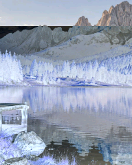
Diagnostic only. Shared shaders, owner limits and production frames remain unchanged. Images: mobile / candidate / heatmap.
fx-ct-scene-cut at 0.9 s; RGBA MAE8/p99 [[94.72265625, 156], [96.07834201388889, 157], [95.67198350694444, 157], [0, 0]]
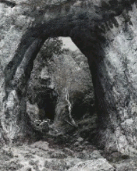
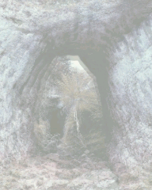
fx-ct-scene-cut at 1.5 s; RGBA MAE8/p99 [[94.01497395833333, 156], [95.44403211805556, 158], [94.92235243055555, 156], [0, 0]]
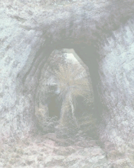
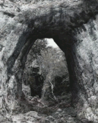
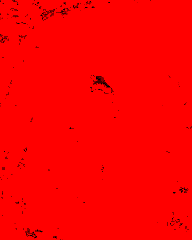
fx-ct-scene-cut at 2.1 s; RGBA MAE8/p99 [[93.60154079861111, 148], [95.03767361111112, 150], [94.54151475694445, 149], [0, 0]]
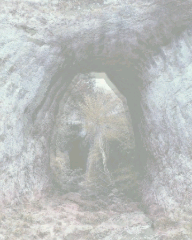
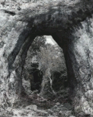
fx-ct-negative-panels at 2.1 s; RGBA MAE8/p99 [[47.03671875, 206], [50.107769097222224, 223], [64.88758680555556, 247], [0, 0]]

fx-cr-signal-lost at 2.1 s; RGBA MAE8/p99 [[35.73077256944445, 132], [41.2279296875, 134], [45.35824652777778, 140], [0, 0]]

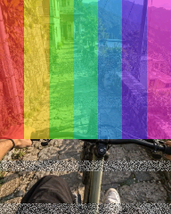
fx-ct-scene-cut at 0.3 s; RGBA MAE8/p99 [[40.9734375, 140], [41.66215277777778, 142], [44.720638020833334, 148], [0, 0]]
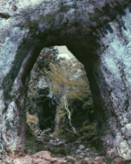
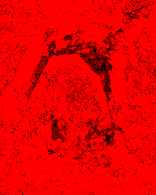
fx-ct-chaotic-heat at 1.5 s; RGBA MAE8/p99 [[29.430186631944444, 123], [35.3060546875, 154], [18.30544704861111, 140], [0, 0]]

fx-cc-wiggle-flicker at 0.3 s; RGBA MAE8/p99 [[32.904058159722226, 156], [33.03359375, 170], [33.51256510416667, 189], [0, 0]]
fx-ct-chaotic-heat at 0.3 s; RGBA MAE8/p99 [[24.313324652777776, 99], [25.786328125, 138], [15.292469618055556, 83], [0, 0]]

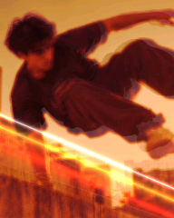
fx-cc-wiggle-flicker at 0.9 s; RGBA MAE8/p99 [[24.190733506944444, 132], [24.197764756944444, 134], [23.779991319444445, 140], [0, 0]]
fx-mt-photo-snap at 1.5 s; RGBA MAE8/p99 [[22.236979166666668, 164], [22.3111328125, 166], [23.070008680555556, 164], [0, 0]]

fx-ct-error-quake at 0.3 s; RGBA MAE8/p99 [[21.858506944444443, 115], [17.895789930555555, 113], [21.980772569444444, 140], [0, 0]]

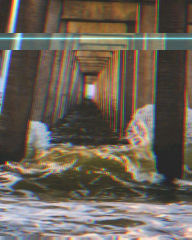
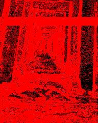
fx-ov-tr-scribble at 0.9 s; RGBA MAE8/p99 [[21.12261284722222, 222], [7.493272569444445, 73], [14.561783854166666, 164], [0, 0]]

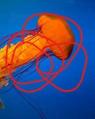
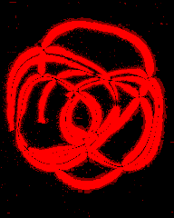
fx-ov-grain at 0.3 s; RGBA MAE8/p99 [[19.09450954861111, 58], [19.169053819444443, 56], [19.09450954861111, 58], [0, 0]]

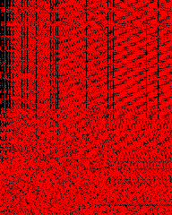
fx-cc-shiny-stack at 0.9 s; RGBA MAE8/p99 [[17.40288628472222, 148], [18.310850694444444, 150], [18.393793402777778, 156], [0, 0]]

fx-cc-feverish at 0.9 s; RGBA MAE8/p99 [[6.577604166666666, 17], [18.32890625, 29], [14.484830729166667, 25], [0, 0]]

fx-cc-shiny-stack at 1.5 s; RGBA MAE8/p99 [[17.41579861111111, 140], [18.032921006944445, 146], [17.915104166666666, 149], [0, 0]]
fx-ov-grain at 0.9 s; RGBA MAE8/p99 [[17.466644965277776, 58], [17.552235243055556, 53], [17.466644965277776, 58], [0, 0]]
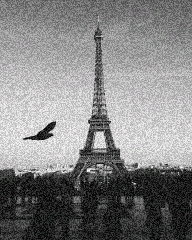
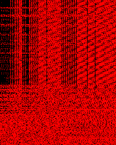
fx-ov-grain at 1.5 s; RGBA MAE8/p99 [[15.671983506944445, 57], [15.764366319444445, 53], [15.671983506944445, 57], [0, 0]]
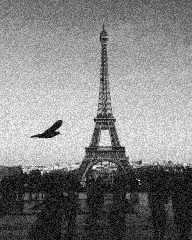
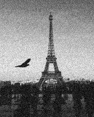
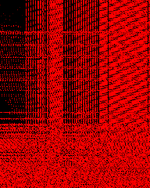
fx-mt-zoom-shake at 1.5 s; RGBA MAE8/p99 [[15.221831597222222, 74], [14.422938368055556, 65], [13.6392578125, 66], [0, 0]]

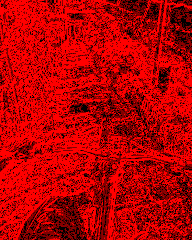